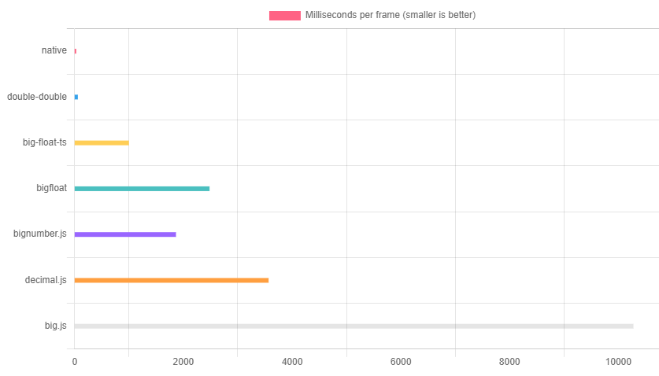

Introduction
Pure double & double-double floating point arithmetic functions with strict error bounds
Installation
npm install double-double
❗Important❗
Use
import { operators } from 'double-double'and then later in the code get the functions you need, e.g.:
const { ddAddDd as add, twoProduct, /* etc. */ } = operators;as opposed to importing the operators directly.
This will increase performance roughly 5 times!
Why? Because Webpack (and Rollup) exports functions using getters that gets invoked on every function call adding a big overhead and slowing down each function. This will not be an issue if code is not bundled, e.g. when using Node.js.
Overview
- Double-double precision floating point operators (similar to quad precision)
- Each function documents a strict error bound (see research [1] below)
- Optimized for speed (see benchmark below)
- Operators include: +, -, *, /, √, abs, <, >, ===, etc.
- No classes ⇒ a double-double is simply a length 2
Numberarray, e.g.
import { twoSum } from 'double-double';
// Specified directly (low order double first)
const a = [-4.357806199228875e-10, 11_638_607.274152497];
// ...or more usually from an earlier calculation
const b = twoSum(213.456, 111.111); // => [-1.4210854715202004e-14, 324.567] (completely error-free)
- All functions are pure, e.g.
// using `a` and `b` as defined above (ddAddDd => double-double + double-double)
const c = ddAddDd(a,b); // => [-2.42072459299969e-10, 11638931.841152497]
- No dependencies
Research
The following research / books / lectures have been used or are directly relevant to this library (especially the first two):
- Mioara Joldes, Jean-Michel Muller, Valentina Popescu, Tight and rigourous error bounds for basic building blocks of double-word arithmetic
- T. J. Dekker, A Floating-Point Technique for Extending the Available Precision
- Yozo Hida, Xiaoye S. Li, David H. Bailey, Library for Double-Double and Quad-Double Arithmetic
- Nicholas J. Higham, Accuracy and Stability of Numerical Algorithms
Benchmark

License
MIT